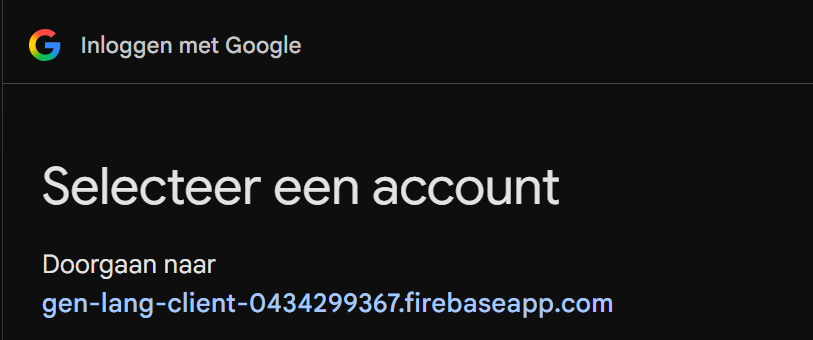

@Eric, allereerst, bedankt dat je de moeite neemt om de VFC Teamplanner uit te proberen! 😊
Met de VFC Teamplanner zet je je team één keer goed neer. Daarna lopen agenda, herinneringen en taakroosters vanzelf en hoef je niets meer door te sturen. De club heeft je spelers en staf al klaargezet; jij vult alleen de contactgegevens en de taken aan.
Deze handleiding bestaat uit losse modules. Dit is module 1. Onderaan klik je door naar module 2 en de andere modules. Eric (O9-4) is de eerste trainer die het gaat gebruiken; zijn ervaringen verwerken we hierin.
Voor je begint: verzamel de gegevens
Het invullen gaat het snelst als je de mailadressen al hebt. Vraag ze alvast op in de teamapp of bij de eerste training. Zonder mailadres kan een speler wel in het team, maar krijgt die geen agenda en herinneringen.
@Eric, voor deze test: gebruik geen echte mailadressen. Vul per speler een nepadres in, bijvoorbeeld Ouder1@mail.nl, Ouder2@mail.nl, enzovoort. Maak bij minstens één speler ook een tweede ouder aan met + Contactpersoon, zodat we zien hoe dat werkt. Er wordt nog niets verstuurd.
Wie je nodig hebt, hangt af van de leeftijd. Dit staat in de app al goed ingesteld; je kunt het per team aanpassen.
| Leeftijd | Berichten gaan naar | Wat je verzamelt |
|---|---|---|
| O7 t/m O12 | Ouders of verzorgers | Mailadres van minstens één ouder per speler |
| O13 t/m O15 | Ouders én speler | Mailadres ouder en, als die er is, van de speler |
| O16 en ouder | Speler zelf | Mailadres en mobiel nummer van de speler |
Een speler kan meerdere contactpersonen hebben, bijvoorbeeld twee ouders die allebei de agenda willen. Taken staan op naam van de speler; wie thuis de taak doet, regelen ze zelf.
Open punt: telefoonnummers van ouders kun je nog niet invullen, alleen het mobiele nummer van de speler. Dat komt erbij zodra we de WhatsApp-variant uitwerken.
Module 1: Je team opvoeren
Je logt in, je ziet je klaargezette team en je loopt vijf stappen door. Reken op een kwartier als je de mailadressen bij de hand hebt. Tussendoor stoppen mag: wat je invult wordt vanzelf bewaard.
Inloggen
- Ga naar roydenouter.github.io/vfc-teamplanner.
- Klik op Inloggen met Google en kies het mailadres dat je aan de club hebt doorgegeven.
- Geen Google-adres? Vul je mailadres in bij Stuur inloglink en klik op de link in de mail. (Kijk ook bij spam.)
Dit webadres is tijdelijk. Voor de echte start komt er een nette VFC-link; die laten we je dan weten.
Log in met precies het adres dat de club van je heeft. Daaraan herkent de app jouw teams.
Op je telefoon? Dat kan prima. Opent de link binnen WhatsApp en geeft Google een foutmelding, kies dan Openen in browser (Safari of Chrome) en probeer het daar opnieuw.
Een vreemd adres in het Google-scherm of de mail? Dat klopt
In het Google-venster staat Doorgaan naar gen-lang-client-0434299367.firebaseapp.com, en de inlogmail komt van een afzender met diezelfde naam. Dat ziet er vreemd uit, maar het klopt.

- Wat is dat adres? De technische naam van Firebase, de dienst van Google waar de Teamplanner op draait. Tijdelijk: later staat er een herkenbare VFC-naam.
- Je wachtwoord blijft bij Google. De Teamplanner krijgt het nooit te zien.
- De Teamplanner krijgt alleen je naam en mailadres, en gebruikt die alleen voor de teamagenda van VFC. Geen toegang tot je mail, agenda of bestanden.
Eerlijk is eerlijk: dit is nog een ruwe proefopzet. Het werkt en je gegevens zijn veilig, maar het oogt op deze punten nog niet gelikt. Dat poetsen we op voordat andere teams instappen. Liever niet via Google? De inloglink per mail werkt net zo goed.
Wat je daarna ziet
Bovenaan staat een gele balk: Je team staat klaar, met de teams die de club aan jou heeft gekoppeld. Het eerste team staat al open in Team opvoeren, met de spelers en de staf uit de teamindeling. Heb je meer teams, dan vul je ze na elkaar in: na het versturen van het ene team klik je bij het volgende op Invullen.
Stap 1: Team
Hier staat de basis van je team. De teamnaam is al ingevuld. Bij Jij vul je je voornaam en telefoonnummer aan; je mailadres staat er al. Jij bent het aanspreekpunt voor de club. Bij Andere trainers en leiders staan je collega's uit de teamindeling; hun mailadres invullen kan, maar hoeft niet (zie hieronder).
Waarom: de club weet zo wie ze moet bellen, en jij kiest later wie de weekoverzichten krijgt.
Selma en Dave meenemen? Dat mag, maar het hoeft niet. Vul je hun echte mailadres in, dan kies je erachter wat ze mogen: Alleen kijken of Kijken en aanpassen (uitslagen, wisselschema en opstelling). Na het versturen staat er voor hen een uitnodiging klaar. Ze krijgen daar geen mail van: laat ze weten dat ze kunnen inloggen op hetzelfde adres. Na hun akkoord zien ze het teamdashboard. Spelers en taken aanpassen blijft bij jou. Laat je hun mailadres leeg, dan gebeurt er niets en kun je ze later nog toevoegen via Beheer.
Stap 2: Spelers
De spelers staan er al in. Per speler vul je de contactpersoon en het mailadres in, en bij oudere teams het mailadres en mobiele nummer van de speler zelf. Vanaf O13 kun je ook rugnummer en positie invullen; die gebruik je later voor de opstelling. Bovenaan staat naar wie de berichten gaan (ouders, beide of speler); dat staat al goed voor jouw leeftijdsgroep.
Waarom: met een mailadres krijgen ouders of spelers de agenda, de herinneringen en hun taken. Speelt een speler niet meer in je team, zet hem dan op Niet meer in het team in plaats van hem te verwijderen. Zijn geschiedenis blijft dan bewaard: stapt hij over naar een ander VFC-team, dan neemt hij zijn tellers mee. En de beurten die hij al deed, blijven in het takenoverzicht staan, zodat daar geen gaten vallen.
Stap 3: Basis
Dit krijgt elk team: wedstrijdprogramma, wijzigingen en afgelastingen, trainingen, clubmededelingen en aanwezig of afwezig. Bij Trainingen vul je jullie dagen en tijden in, standaard twee keer per week. De rest komt van de club en straks vanzelf uit Voetbal.nl.
Waarom: hieruit maakt de app de agenda die ouders en spelers in hun telefoon krijgen.
Stap 4: Extra's
Vink aan welke taken jullie team verdeelt: begeleiden training, shirts wassen, wedstrijdballen, rijden naar uitwedstrijden, spelbegeleider, siroopkannen, bardienst of oefenstof per week. Bij een taak met instellingen opent een venster, bijvoorbeeld voor dagen of uitzonderingen. Daaronder zie je meteen het rooster.
Waarom: de app verdeelt de beurten eerlijk over alle spelers over het hele seizoen, rekening houdend met vakanties en vrije dagen. Je hoeft zelf geen schema meer te maken.
Stap 5: Controleren
Je ziet alles nog een keer op een rij. Klopt het, klik dan op Team versturen. De club zet je team daarna aan; vanaf dat moment zie je het Teamdashboard en kun je wijzigingen doorgeven via Beheer.
Na het versturen
Op het Teamdashboard zie je uitslagen, stand (vanaf O11), programma en topscorers, de tab Team Taken met het rooster en de tab Wisselschema. Vanaf O13 staat er ook een veldje met de opstelling. Bij Beheer geef je wijzigingen door, zoals een nieuwe speler of iemand die stopt.
De andere modules lees je pas als je ze nodig hebt. Tik op een module om hem te openen.
- 2. Teamdashboard: wat je ziet en hoe je een uitslag invult
- 3. Wisselschema: het schema per wedstrijd en de speelminuten
- 4. Opstelling (vanaf O13): rugnummers, posities en het veldje (pas vanaf O13)
- 5. Team Taken: wie wanneer aan de beurt is
- 6. Wijzigingen: een speler erbij, eraf, naar een ander team of even niet
Vragen en feedback
Loop je ergens tegenaan of is iets onduidelijk? Geef aan waar je tegenaan loopt, dan komen we eruit. Stuur een bericht aan Roy.
Module 2: Het teamdashboard
Het dashboard is je startpunt na het inloggen. Bovenaan staat je team met de teamfoto, de staf, het aantal gewonnen, gelijke en verloren wedstrijden, en de vorm van de laatste wedstrijden. Rechts zie je de eerstvolgende wedstrijd.
Daaronder kies je tussen drie tabs.
- Voetbalzaken: uitslagen, stand (vanaf O11), topscorers en het programma. Bij de eerstvolgende wedstrijd zie je ook kleedkamer, veld en wie er komt.
- Team Taken: wie deze en volgende week aan de beurt is (module 5).
- Wisselschema: het schema per wedstrijd en de speelminuten (module 3).
Een uitslag invullen
Klik na de wedstrijd op de wedstrijd en vul de doelpunten in. Tik de doelpuntenmakers aan: met + tel je een doelpunt erbij, met − haal je er een af. De topscorers lopen dan vanzelf bij.
Wie komt er?
Bij de eerstvolgende wedstrijd tik je een speler aan: komt, afgemeld of weer open. Zolang de uitnodigingen nog niet automatisch lopen, houd je dit hier zelf bij.
Wedstrijden
De wedstrijden komen straks vanzelf uit Voetbal.nl. Tot die koppeling er is, zet de club een paar testwedstrijden klaar zodat je alles kunt uitproberen. Onderaan staan de KNVB-spelregels voor jouw leeftijd.
Module 3: Wisselschema en speelminuten
Eric, ik weet dat jij de wissels zonder problemen regelt. Wil je het toch een keer proberen? Ik ben benieuwd of het je tijd scheelt, of het goed werkt, en of het iets toevoegt, bijvoorbeeld het overzicht van speelminuten over het seizoen.
Het wisselschema verdeelt de speeltijd eerlijk over iedereen die er is. Ook de keepersbeurten worden verdeeld.
Voor de wedstrijd
- Open de tab Wisselschema en kies de wedstrijd.
- Tik bij Wie zijn er? aan wie er komen. Doe dit bijvoorbeeld op vrijdag of vlak voor de aftrap.
- Kies Wissel elke 5, 10 of 15 minuten en wie er keept. De wedstrijdvorm (bij O9: 6 tegen 6, 2 × 20 minuten) staat al goed volgens de KNVB.
- Het schema verschijnt per blok: wie er in het veld staat, wie keept en wie wissel is.
Na de wedstrijd
Liep het anders dan gepland, bijvoorbeeld door een blessure? Klik dan op Minuten aanpassen en vul per speler in hoeveel minuten hij in het veld stond, keepte en wissel was.
Over het seizoen
Onder het schema zie je per speler de speelminuten en keepersminuten van het hele seizoen. Zo zie je in één oogopslag of iemand achterloopt. Met Exporteren (pdf) bewaar of deel je dat overzicht.
Spelers die graag keepen, geef je daar een handschoen-icoon. Zo zie je meteen wie je kunt vragen als de keeper er niet is.
Module 4: Opstelling en posities (vanaf O13)
Vanaf O13 staat op het dashboard een klein veld met de opstelling. Voor O9 heb je dit nog niet nodig; lees het later.
Rugnummers en posities
Zet bij Beheer → Bewerken → Spelers het schuifje Rugnummers en posities aan. Per speler vul je dan het rugnummer in en kies je in de keuzelijst een of meer posities, zoals CV (centrale verdediger) of SP (spits).
De opstelling maken
- Kies de wedstrijd en het speltype, bijvoorbeeld 1-4-3-3 of 1-4-4-2.
- Tik een plek in het veld aan en kies een speler. In de cirkel staat zijn rugnummer.
- Of klik op Automatisch invullen: de app zet spelers op een plek die bij hun positie past.
Wie niet in de basis staat, komt bij Wissels. Wie er niet is, zet je op Afwezig.
Module 5: Team Taken
In de tab Team Taken zie je wie deze week en volgende week aan de beurt is: begeleiden, shirts wassen, wedstrijdballen, rijden en de andere taken die je bij Extra's hebt aangevinkt. Per taak zie je ook hoe vaak iedereen al aan de beurt was.
De club zet de planning aan en vult die steeds een paar weken vooruit aan. De app verdeelt eerlijk: wie een taak het minst deed, is als eerste weer aan de beurt, en niemand krijgt alles in dezelfde week. Vakanties, vrije dagen en spelers die tijdelijk niet beschikbaar zijn, slaat hij over.
Vraagt een ouder om het rooster? Maak er met Exporteren een pdf van om te delen of te printen.
Wat er nog komt
- Ruilen: een ouder die niet kan, ruilt zelf met een ander. Nu regel je dat nog via de groepsapp en geef je het door aan de club.
- Afmelden voor een training: via een linkje in plaats van een berichtje in de groep.
- Herinneringen: een mail aan wie aan de beurt is, met de wedstrijdinformatie erbij.
Module 6: Wijzigingen via Beheer
Bij Beheer pas je je team aan na het versturen. Met Bewerken loop je de vijf stappen opnieuw door, bijvoorbeeld voor een nieuw mailadres of andere trainingstijden. Je kunt er ook de teamfoto wijzigen.
Voor wijzigingen in de spelersgroep klik je op Speler erbij, eraf of naar ander team. Je kiest dan een van deze vier:
| Keuze | Wanneer | Wat er gebeurt |
|---|---|---|
| Nieuwe speler | Er komt iemand bij | De club zet hem erbij. Hij begint met evenveel beurten als wie het minst deed, zodat hij niet meteen alles krijgt. |
| Speler naar ander team | Hij stapt over binnen VFC | De trainer van het nieuwe team krijgt hem aangeboden en accepteert. De club krijgt bericht. Zijn beurten gaan mee. |
| Tijdelijk niet beschikbaar | Bijvoorbeeld een lange blessure | Hij blijft in het team, maar krijgt tot de datum die je kiest geen taken. Daarna doet hij vanzelf weer mee. |
| Speler gaat van de club af | Hij stopt bij VFC | De club haalt hem eraf. Zijn geplande beurten worden opnieuw verdeeld; wat hij al deed, blijft in het overzicht. |
Krijg je zelf een speler aangeboden uit een ander team? Dan zie je bovenaan je dashboard komt over van, met de knoppen Accepteren en Weigeren.